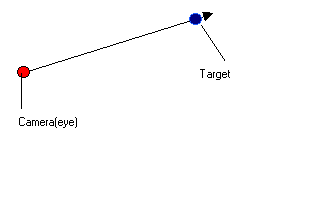
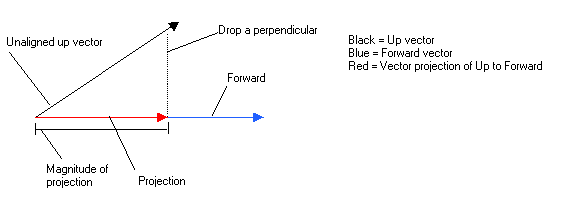
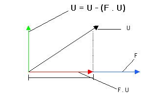

This is the pitch, yaw, roll way of viewing your world. This is what we have been using all along. Rotation from x, y and z axes. Since it's been already discussed in previous chapters, I won't try to delve on the subject much. This system, although much more "natural", has some major flaws.
- You need 3 angles and the mouse only returns a 2d ordered pair(x, y).
- Angles are hard to visualize.
- They are prone to "gimbal" lock where angles cancel each other out. The result is vertigo. Although I have never experienced my engines locking, it's better to be safe than sorry.
This my friend, is a way of representing vectors using quats. My opinion is, with you can do with quats, you can do with vectors and matrices. Quats are extensions of Complex numbers. Where complex = i, Quats = i, j, k. You you know how to deal with complex numbers you'd know how to deal with quats. It's just standard algebra if you can remember your (FOIL) technique in multiplying binomials. They're not that hard, and lots of people use them not even knowing how to do quat arithmetic, since there are numerous premade stuff on the net to do Quat operations. :*)
Pros:
- Eliminates gimbal lock
- Great in intepolation
- Sounds cooler
Cons:
- Probably a fad/trend
- You still have to convert from euler angles> quats > matrices to transform points.
- Most open domain quat operations are in C and this is a QB mag. :*)
This is what I will be discussing in detail from this point onwards. After making countless, looking good, running well 3d engines, I became sick of managing angles. So I asked myself: "What if I there is a way to transform your world space using just 2 points?". The reasons being that, in the real world we only need two points to look. The one we are looking at and the one looking (that's us).
I must admit that I didn't know what the lookat transform does back then as I only heard it from UGL's U3d module by blitz and v1ctor (not their first names). And since only they use it and it's not opensource, I had no way of knowing that it was what I needed. So what I did was try to think of some ways that I could transform my points using 2 coordinates.
Since I know that transforming a point in 3d space requires 3 vectors, all I needed to do was to find values for these vectors. Now I know my two points/coords. Say the camera point and the point we would look at:
(cx, cy, cz) = camera(eye)
(tx, ty, tz) = target(what we are looking)
Finding the 1st(forward) and 3rd(right) vectors are easy enough. To find the vectors:
or:
Forward.y = target.y - camera.y
Forward.z = target.z - camera.z

This is assuming I already know my up vector.

The problem is, how the hell do I find the up vector? At that time, I had no idea. My first solution is to align the forward, up and right vectors with the x, y and z axes. Not good enough since I have to use euler angles again. Next was to ask my friends at Qbasicnews on how to find the up vector. No one was able to give me the right answer, as all the links posted pointed to dead ends. Them I tried to "guess" the up vector with nasty results. I was almost about to give up on the matter when I saw a code made by TOSHI HORIE on how to find the right vector!!! After reading the code, I saw that the solution was staring me in the face that after reading the code, I would have liked to kick myself where it hurts a lot. :*(
The solution was actually very simple: "The up vector is your Y-AXIS!!!". Yep good ol' (0,1,0). "Would somebody kick my ballz?" j/k. So I now know how to calculate all the vectors, the only thing that remains is aligning all the vectors to your camera coord. This job is handled by the vector operations:
- Cross product
- Dot product
- vector projection
See, I told you to read the previous chapters. These operations are discussed in detail in Chapter 3 of the series. So to make a matrix which transforms the points using the camera vector:
1. Find forward vector
2. Normalize it
3. Make your up vector (0,1, 0)
4. Align your up vector into the camera origin by subtracting the vector projection of forward from Up.
5. Get their cross product to get the right vector.
6. Smack those values in the transformation matrix and transform your points.
To align the up vector to the camera origin, we need to find the projection of U(up) to F(forward) by dropping a perpendicular from U's head to F. This vector, which actually lies in the direction of F is the projection of U to F. Now what good would this be? Well we could get the Y(up) component of the Up vector be subracting the X(forward) component thereby, aligning the Up vector with the Forward vector's origin. The resulting vector, after Y is copied to Up is a vector perpendicular to the Forward vector.
- Vector projection

- Perpendicular vector after aligning

Here's the lookat function I made. Be sure to note of the up vector as we will have fun with it later on. :*) Matrix.Setcamera is just a function to smack the lookat transform's vector components to a matrix.
Now you only have to use the resulting matrix to transform your points and they would orient themselves the way we wanted to.
QB code:
'This sub returns a trasformation matrix defined fom 3 vectors U,F,R
'This type of viewing system is perfect for FPS's. ;*)
'I intentionally left out the roll angle since I have really no use for it.
DIM F AS Vector 'Forward vector
DIM U AS Vector 'Up vector
DIM R AS Vector 'Right vector
F.x = Target.x - Camera.x
F.y = Target.y - Camera.y
F.z = Target.z - Camera.z
Vector.Normalize F 'normalize forward vector
U.x = 0
U.y = 1
U.z = 0
Vector.Normalize U
Dot! = Vector.Dot!(F, U)
U.x = U.x - F.x * Dot! 'Align U to F
U.y = U.y - F.y * Dot!
U.z = U.z - F.z * Dot!
Vector.Normalize U 'normalize the Up vector
Vector.Cross R, U, F 'R = normal to plane f and u
Vector.Normalize R
'Set up camera matrix
Matrix.SetCamera M!(), R, U, F
END SUB
SUB Matrix.SetCamera (M!(), R AS Vector, U AS Vector, F AS Vector)
' [ Rx Uy Fz 0 ]
' [ Rx Uy Fz 0 ]
' [ Rx Uy Fz 0 ]
' [ 0 0 0 1 ]
Matrix.SetIdentity M!()
M!(1, 1) = R.x
M!(1, 2) = R.y
M!(1, 3) = R.z
M!(2, 1) = U.x
M!(2, 2) = U.y
M!(2, 3) = U.z
M!(3, 1) = F.x
M!(3, 2) = F.y
M!(3, 3) = F.z
END SUB
Now that we know how to transform points using the lookat transform, we would need to design a systems based on the mouse coordinates. Since the mouse has only 2d coords, we only need 2 angles to find a point in 3d space. How do we do that? Well, if you have read chapter 3 of the 3d series I made, it would certainly occur to you that we have to use the spherical coordinate system. I told ya. :*) For those who have forgotten the equations in converting spherical coordinates to rectangular coords:
CamLookAT.z = SIN(Phi!) * SIN(Theta!)
CamLookAT.y = COS(Phi!)
Where phi! = (Elevation) the angle against the horizon or your mousey and theta!=(azimuth) is the 2d angle that you can make from the horizon or mousex (think of a rainbow).
How do we get Phi and Theta correctly when there are 360 degrees(2PI) in one revolution and the maximum coords of the mouse are just 319 and 199 respectively (in screen 13)? The answer again is conversion. For those of you who have done Allegro GFX and some Democoding you probably already have heard of angles ranging from 0 to 255 or 0 to 512 or any maxvalue which is a power of two. Don't worry we will not use those values but we will in fact, use the same hack to interpolate our angle increments. :*) Here's the formula:
Where:
Actualangle = the value we would pass as an argument to the trig functions SIN and COS.
2*PI = duh? It's one revolution
Maxangle = would either be 320 or 200. :*)
Here's the code to convert mouse coords to spherical angles. Modified a lil bit to work seamlessly. :*)
Phi! = PI * MouseY / 200 'elevation
CamLookAT.X = COS(Theta!) * SIN(Phi!) 'Spherical system
CamLookAT.Y = COS(Phi!)
CamLookAT.z = SIN(Theta!) * SIN(Phi!)
Movement (Translation) is just a matter of understanding vector mathematics I discussed in Chapter 3 (This is Chapter 5 already). To move, we need our starting point (Camera Position), the lookat vector (Camera Lookat), and the speed we would like to move.
To get the speed (Magnitude), we multiply the lookat vector by a scalar value. ie. Scalar multiplication.:
ymove = CamLookAT.Y * speed
zmove = CamLookAT.z * speed
To walk forward, we subtract the speed of lookat vector from our camera position (Note that speed here is 3):
Campos.Y = Campos.Y - CamLookAT.Y * 3
Campos.z = Campos.z - CamLookAT.z * 3
To move backward do the reverse:
Campos.Y = Campos.Y + CamLookAT.Y * 3
Campos.z = Campos.z + CamLookAT.z * 3
Since we translated the origin(the camera postion in world space, we also have to translate the origin of our camera lookat vector or our render wouldn't look nice. For that we add the camera position to our lookat vector. ie. vector addition.
CamLookAT.Y = CamLookAT.Y + Campos.Y
CamLookAT.z = CamLookAT.z + Campos.Z
Now we are ready to transform!!!
Pseudocode:
2. Convert spherical to rectangular coord and put the resulting values on our lookat vector.
3. Move the camera depending on the input.
4. Translate the lookat origin to the relative to the camera origin(vector add)
5. Translate the matrix using the camera origin
6. Transform the matrix using the lookat transform
7. Transform your points.
8. Draw
That's it!!! Things to remember though is that the origin of rotation is the camera position. What this means is that the camera is not moving but the world space is moving relative to the camera (Einstein). ;*)
The "Puke" cam
The word puke cam came from a review of Spy Hunter on the Ps2/Xbox I saw on TechTV. They called it puke because it would really puke you out of your lunch if you play the game using that mode. You are racing normally but with a rotating camera. Now if that's not gonna make you puke, I don't know what will.;*)
You might think that this mode is as useless as your worn out socks but think of a plane doing a roll, and a car travelling on an angled road. Surely it would be nice to have a way to roll the world around your forward vector. "No! not another boring vector operations again!". Hardly. :*). Implementing a roll on the camera is just plain fun and plain easy. All we have to do is change the UP vector's orientation. "But up is (0,1,0) right?". Yep, but what if we change the up vector to any orientation we want? Well, it turns out that doing something with out up vector permits us to roll the camera. How do we roll the camera? Easy, use the polar to cartesian coordinate conversion.
ra! = RollAngle% * 3.141593 / 180
U.x = COS(ra!)
U.y = SIN(ra!)
U.z = 0
Clippin' it
The clipping algo that I would introduce here is the easiest one. By easiest doesn't mean it's sucks. Since the ASM triangle filler I used already implements scanline clipping, I should know since I made it. :*), the only clipping we have to do is a near/far clip and 2d x, y clip. Here's the algo.
if all z coords are > 1
if all z coords are < Farthest distance
if some x> 0 or some y >0 or some x <319 or some y<199
Poly draw =True
end if
end if
end if
next